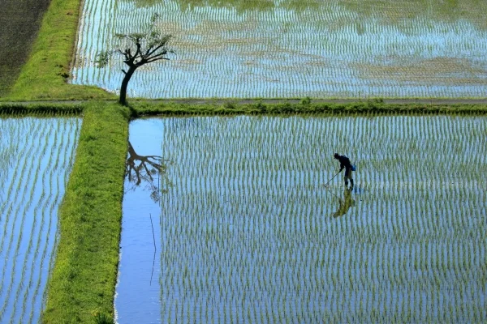
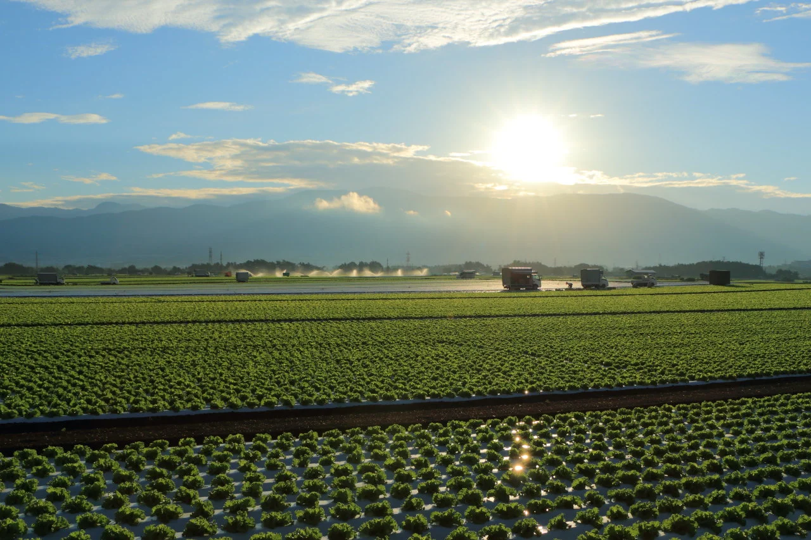
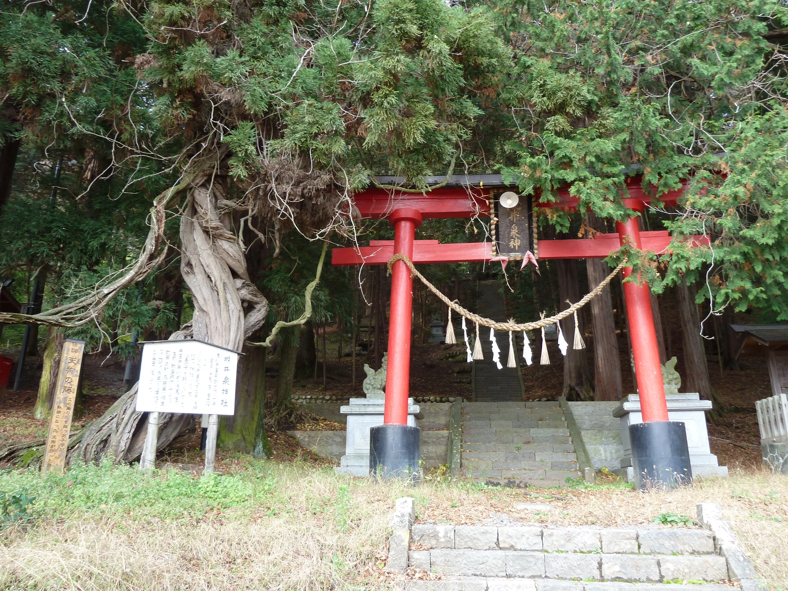
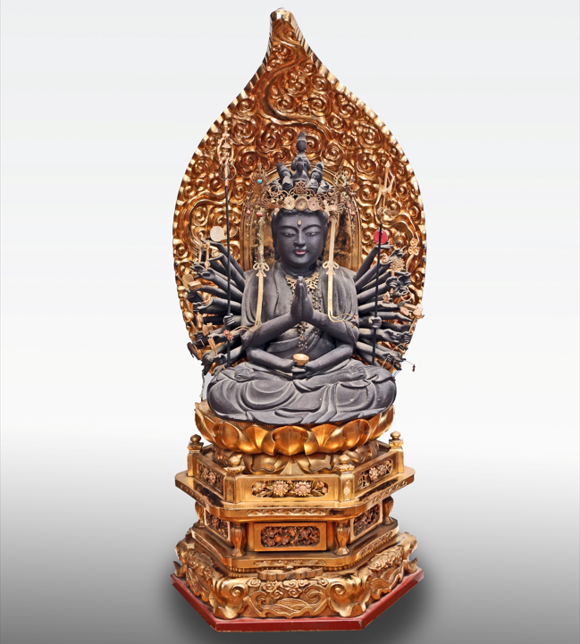
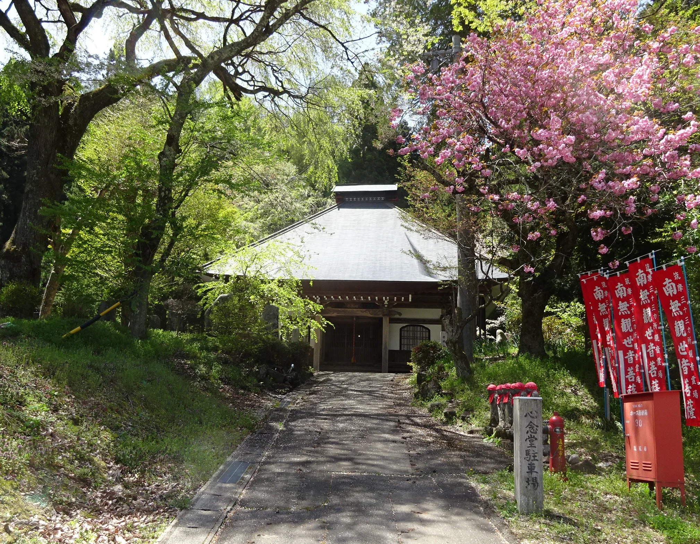
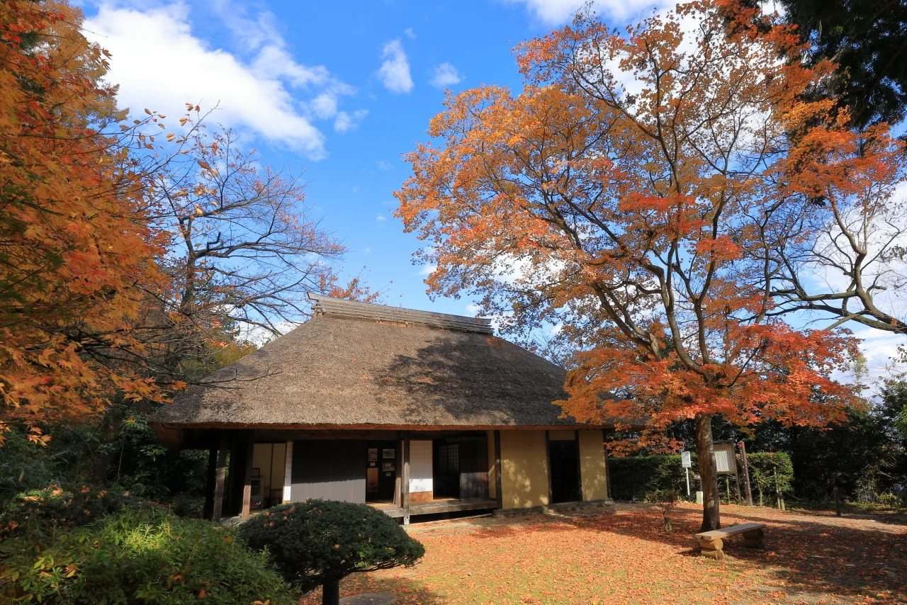
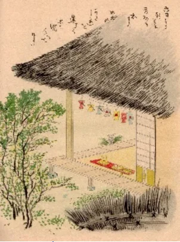
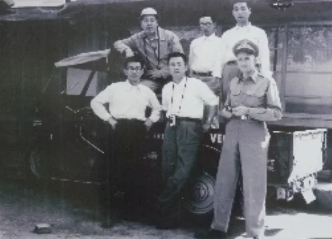

HIGHLIGHTS
HIGHLIGHTS
CONTENTS
巻頭カラー口絵から巻末年表まで、全404ページ。
NATURE & LAND
かつて、山の恵みがこの地を支えた。

市内最高峰「からたきの峰」（1,858m）を擁する山岳地帯から、小曽部川の流域にかけて、古くから林業がさかんに営まれてきた。古代の寺社建立から江戸の都市建設まで、木材はその時代の最重要資源の一つ。山の恵みが、村の経済的な基盤を支えた。
切り出された木材や物資は、奈良井川が松本平へと流れ出す出口に位置する洗馬を経由し、時の都・京都や江戸へも送り出された。やがて奈良井川と小曽部川などにはさまれた広大な台地（岩垂原410ha・芦ノ田原）の農業開発が、江戸時代初期から進んだ。

HISTORY
なぜ京都の権力者は、洗馬を欲しがったのか。

藤原実資、後白河法皇、室町院。時代の権力者が、遠く信州の洗馬を代々手に入れようとした。洗馬牧は県内に4つしかない私牧の一つ、洗馬の庄は京都・蓮華王院（三十三間堂）の荘園。地名や堂に、今もその言い伝えが残る。
桔梗ヶ原がまだ未開発だった時代、洗馬は松本平の北へ向かう唯一の渡河点を擁する物流の「蛇口」だった。馬を産出し交通の要衝でもあるこの地を、権力者たちは何世代にもわたって手放さなかった。そのこと自体が、洗馬の価値を物語っている。


CULTURE
江戸時代に文人が集まった理由がある。

経済的に潤い、高遠藩の飛び地として中央から距離を置いた洗馬には、自主独立の気風が根付いた。日本民俗学の先駆け・菅江真澄が旅のスタートとして1年余り滞在し、小林一茶も句を寄せた俳人を輩出。「北の小布施、南の洗馬」と並び称された信州庶民文化の中心地だった。
この文化の系譜は近代にも続く。文化勲章を受章した医学者・熊谷岱蔵は菅江真澄を宿泊させた医家の6代目。豊かさが文化を呼び、文化が人を育てた。

INNOVATION
進取の気風は、現代にも生きている。
戦後の洋菜需要にいち早く目をつけアメリカから種を導入、進駐軍への野菜供給指定地に。「段ボール化」「今日取り明日売り」など独自の工夫を重ね、全国初の予冷庫の導入により「洗馬のレタス」は全国ブランドへと成長した。
歴史をたどれば、洗馬は常に時代の先を行ってきた。明治初めの塩尻随一の製糸工場、松本平で先陣を切った購買組合。「洗馬のレタス」は、その最も新しい表れだ。

MORE
※ これらはすべて地区誌『洗馬』に収録予定のコンテンツです